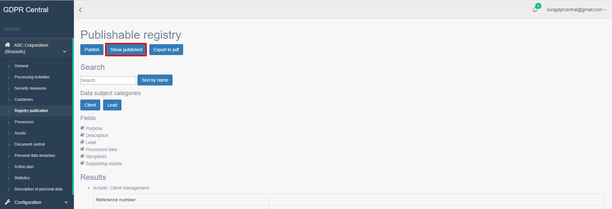
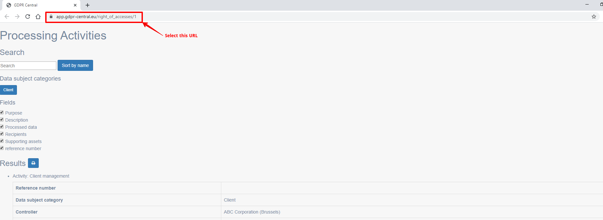

How do I integrate publishing my Process Activity with corporate sites?¶
You can display published Processing Activities within your corporate sites. To do this, you will need to create an integration between GDPR-Central and your corporate site.
Integrating GDPR Central to Corporate Site¶
To integrate GDPR-Central and your corporate site, perform the following step:
If you want to include the published page in your website, add the following snippet of code in your website page:
<script> window.addEventListener("message", function(evt) { if (!document.documentURI.startsWith(evt.origin)) { var container = document.getElementsByClassName("iframe-container")[0] var scrollHeight = evt.data // The data will contain the scrollHeight of the inner frame, communicated once the iframe is loaded var iframe = document.getElementById("right_of_access_iframe") iframe.style.height = scrollHeight + "px" container.style.paddingTop = scrollHeight + "px" } } , false) function sendCSS(iframe) { // Example using raw css provided in the message //iframe.contentWindow.postMessage({"rawcss": "body {font: 20px verdana;}"}, "https://app.gdpr-central.eu") // Example using a CSS URL //iframe.contentWindow.postMessage({"urlcss": "http://localhost:80/test.css"}, "https://app.gdpr-central.eu") } </script> <div class="iframe-container"><iframe id="right_of_access_iframe" src="<URL after clicking Show Published button>">Your browser does not support iframes.<br /><br /> </iframe></div>Note
Please ensure that the section displayed as <URL after clicking Show Published button> in the code is replaced with actual URL that you get after clicking Show Published button.
Selecting URL to be included in code snippet¶
To select the URL to be included to the code snippet above, perform the following steps:
In the left pane, under your organization, click Registry Publication.
The Publishable Registry page opens.
Click Show published button in this page.
A new page opens with all the published processing activities. Select the URL from this page.
